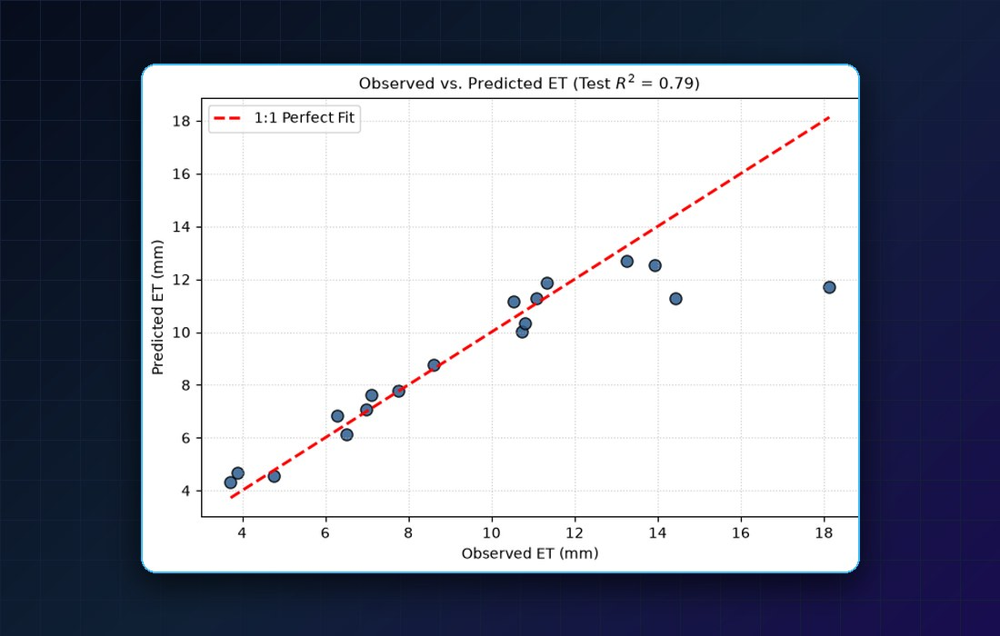

Predicting Evapotranspiration over Islamabad
Evapotranspiration modelled from satellite-derived vegetation indices and climate variables for the Islamabad Capital Territory: 87 observations, a missing-data and outlier audit, VIF pruning, then a regression checked on a held-out test set and with 5-fold cross-validation.
Test R² 0.785 (RMSE 1.78 mm); cross-validated mean R² 0.724. Six predictors kept after pruning EVI and LAI.